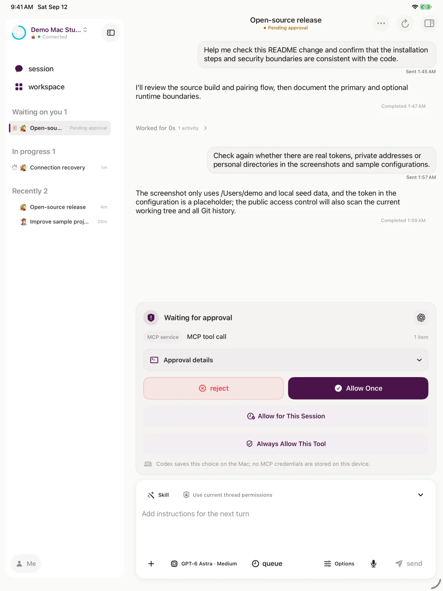
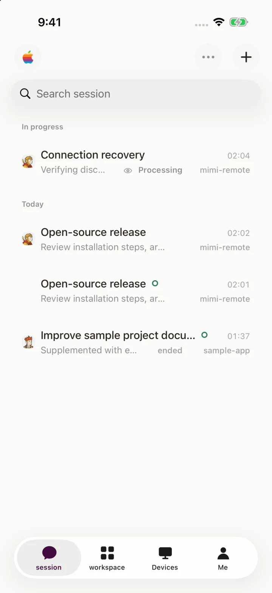
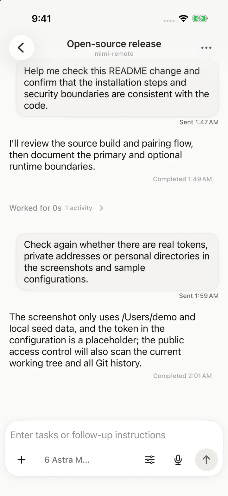
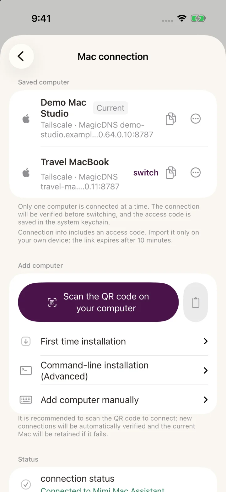
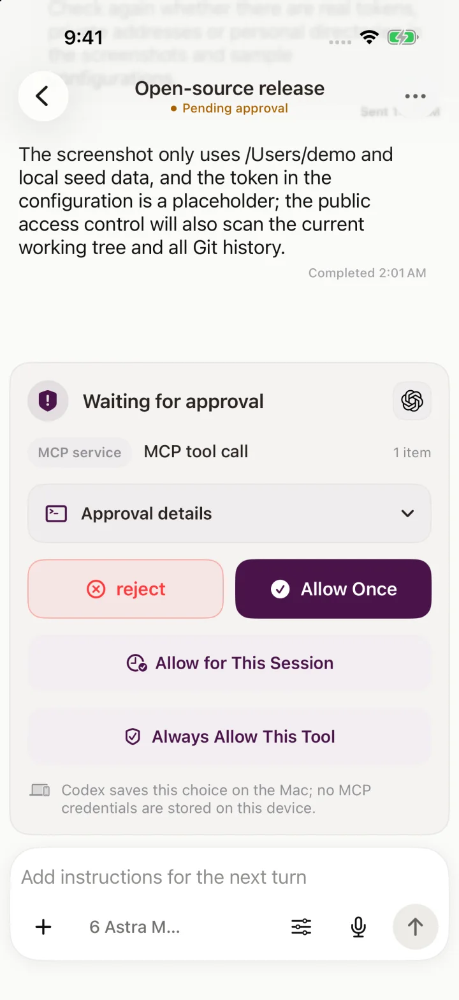
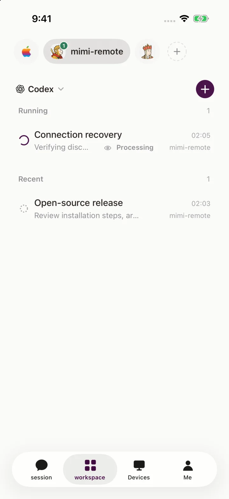
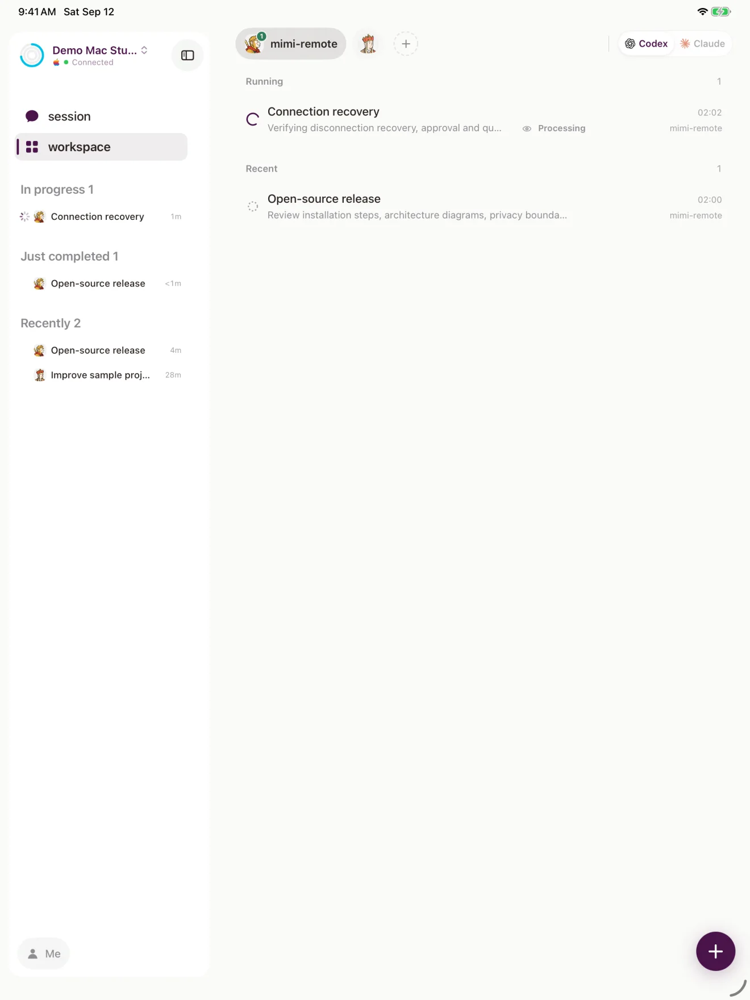
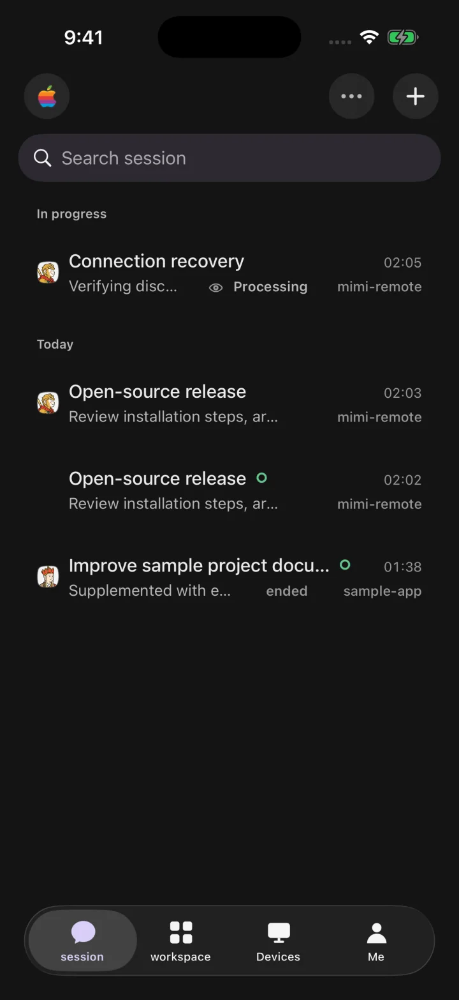

For Codex & Claude Code
Leave your desk.
Not your session.
Mimi Remote is a native iPhone and iPad app for Codex and Claude Code. Your computer keeps doing the work — you follow along, reply and approve from anywhere.


Made for the moments
you're away from your desk.
-
Seamless handoff
Codex threads move between your computer and your phone with full context.
-
Every computer
Mac, Windows and Linux, each saved and one tap apart.
-
Tailcat built in
Reach your computer from any network, no VPN app needed.
-
Timely notifications
Approvals, replies and failures reach your lock screen.
-
Effortless
Approve, queue and switch models right beside the composer.
-
Beautiful
Crafted separately for iPhone and iPad, in light and dark.
Seamless handoff
Start on your computer.
Keep going on your phone.
Mimi connects to the same Codex App Server as Codex Desktop and the Codex CLI. A thread started in any of them opens in the others with its history, context and running turn intact — no copy-paste, no re-explaining.

- Full history
- Live progress
- Claude Code, too
Sharing sessions with Codex Desktop and the CLI works on Mac and Linux computers.
Multiple devices
One phone.
All your computers.
The Mac Studio at home, the MacBook you travel with, the Windows workstation at the office — each is its own saved connection, with its own token in the Keychain. Switching takes one tap, and iPad gets the very same abilities in a wider layout.
- macOS A menu bar app for status, quota and one-click pairing.
- Windows A tray app and a per-user service for Windows 10 and 11.
- Linux A desktop tray and a systemd user service.

Remote connection
Reach your computer
from anywhere.
Mimi has Tailcat built in. Generate a QR code on your computer, scan it with your phone, and you're paired — no VPN app to install. It goes peer-to-peer whenever the network allows and falls back to an encrypted relay when it doesn't. Private keys never leave your devices.
-
Tailcat Beta
Built in. Scan once, then connect from any network.
-
Tailscale
Already on a tailnet? Mimi uses it as is.
-
Same Wi-Fi
On the same network, connect directly with nothing else to set up.
Notifications
When it needs you,
you'll know.
When an agent wants to run a command, change files or needs your input, a notification arrives with the session's title. Finished replies, failures and interruptions come through too — and approvals can be answered right from the notification.
Off by default. Once on, only a fixed-format status leaves your computer — never your code, prompts or conversations. Session titles are filled in on your phone.
Effortless
Serious work,
made light.
Messages, reasoning, commands, tool calls and approvals arrive as one readable timeline. Model, reasoning level, Skills, permissions and your queued next step all sit right beside the composer.
Approve in place
Allow once, for the session, or always — without leaving the thread.
Queue the next step
Line up follow-ups while the current turn is still running.
Switch models anytime
Pick the model, reasoning level and speed for each turn.
Voice, images and files
Dictate, attach screenshots and preview files with Quick Look.
Recovers on its own
Reconnects by itself, with diagnostics a tap away.
Git when you need it
Review diffs, manage worktrees, commit and open a draft PR.

Beautiful
Crafted for iPhone.
And for iPad.
Native SwiftUI throughout. iPhone keeps everything within reach of one thumb; iPad opens the same sessions into a multi-column workbench. Light and dark get equal care, with themes and workspace icon sets to make it yours.



Light and dark · Themes · Workspace icon sets
-
Open source
The app, the computer service and the Claude bridge are all on GitHub.
-
Your data stays home
Project files, session history and runtime credentials stay on your own computer.
-
Your own agent accounts
Use the Codex or Claude Code sign-in already on your computer. Mimi never handles those credentials.
Take your agents with you.
Requires iOS or iPadOS 18 or later, plus a Mac, Windows or Linux computer with Codex CLI.